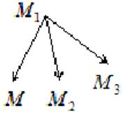

5.2.6. Уравнение
плоскости, проходящей через три данные точки
Пусть даны три точки  , – текущая точка плоскости.
, – текущая точка плоскости.
, – текущая точка плоскости.Рассмотрим три вектора:
,
,
.

Точка лежит в плоскости
в том и только в том случае, если эти
векторы компланарны. Условие компланарности трех векторов , и
определяет плоскость, проходящую
через три данные точки:
.
Уравнение
плоскости проходящей через три данные точки